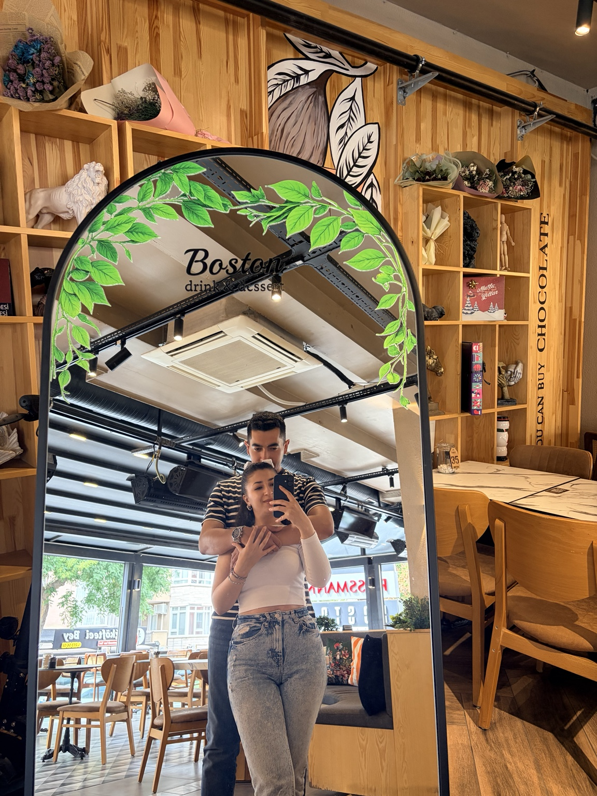
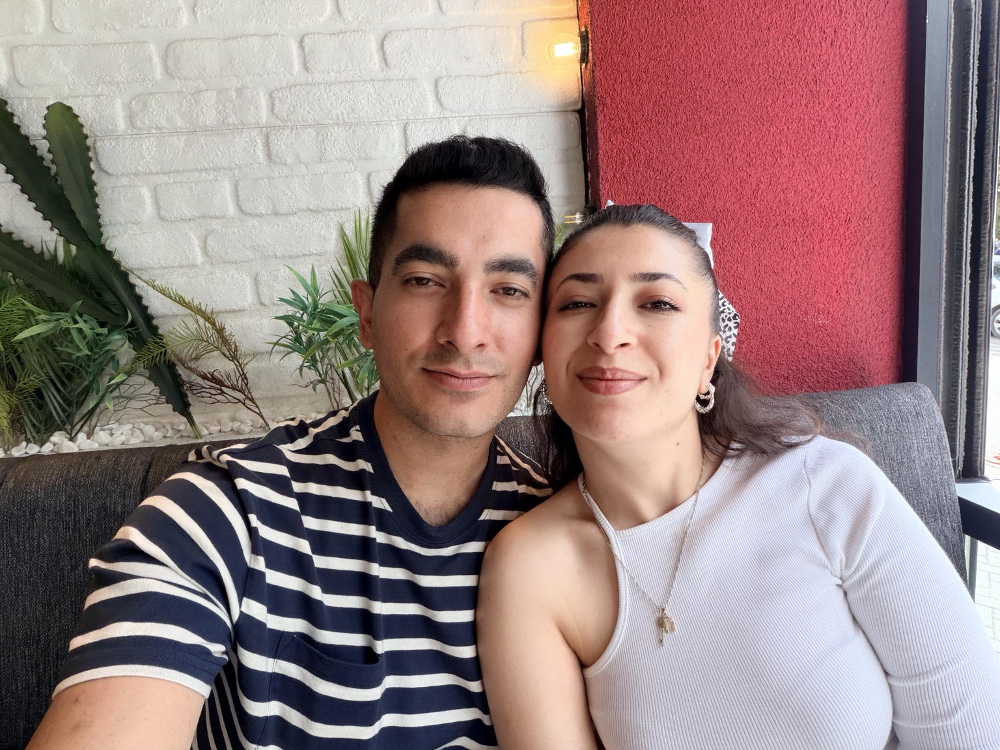
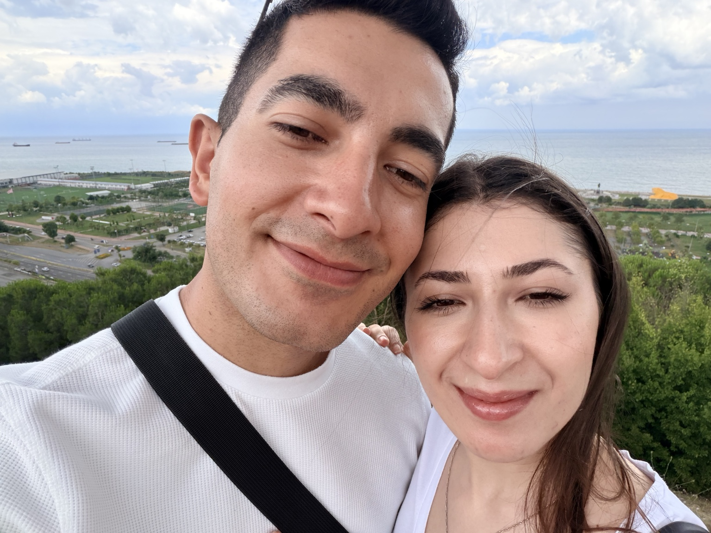
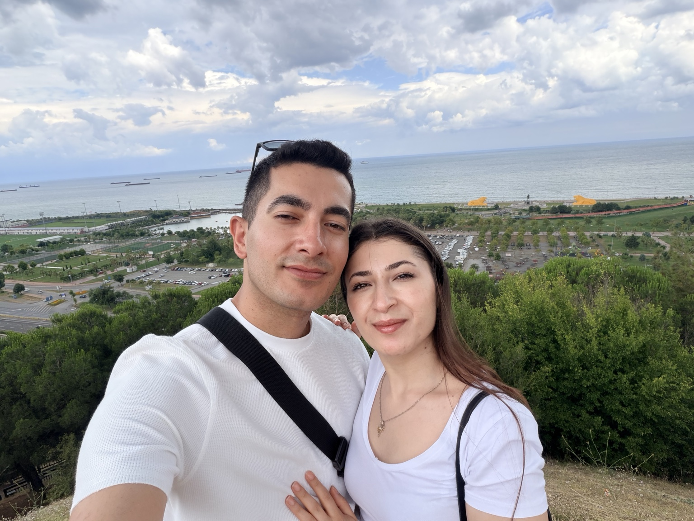
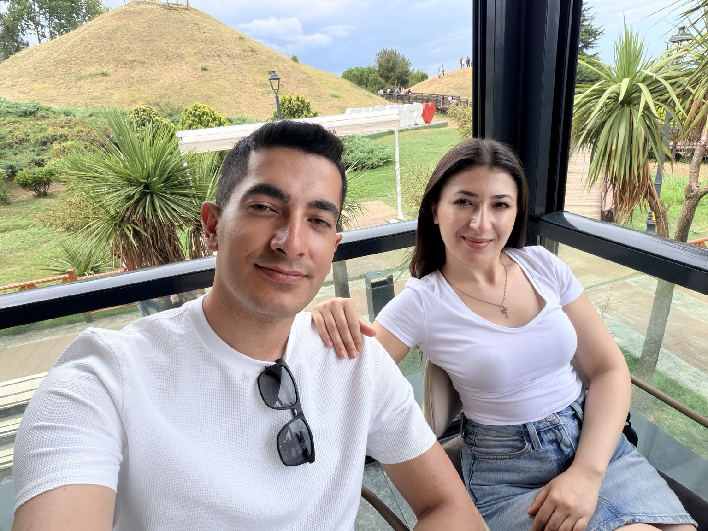
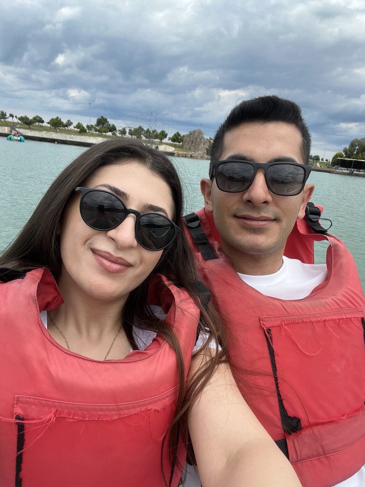
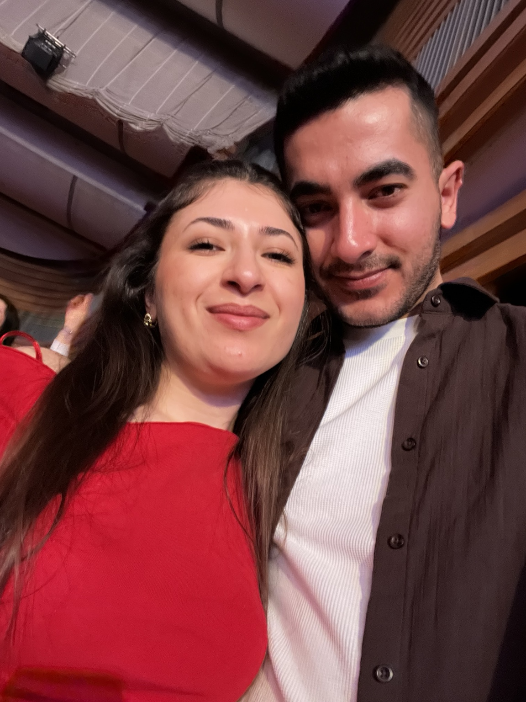
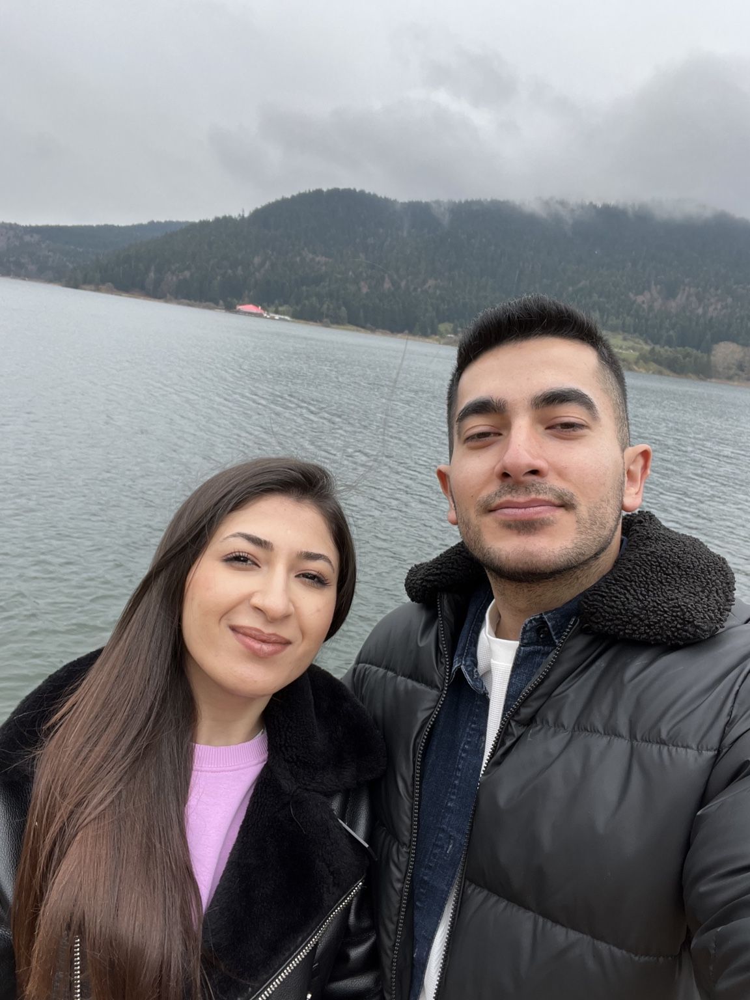
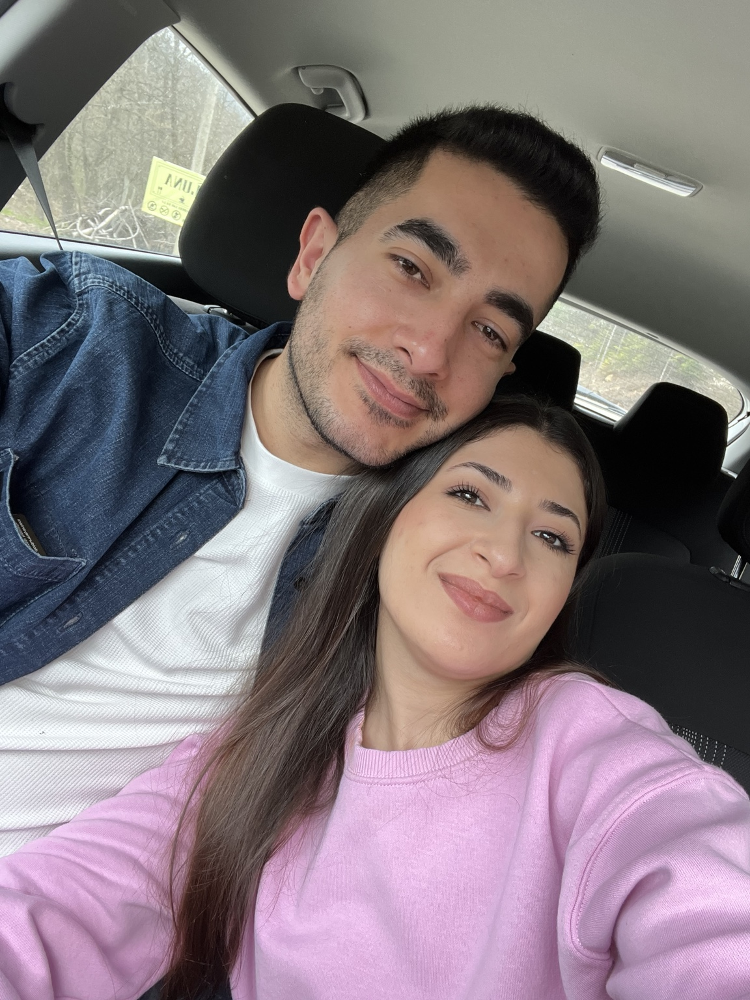
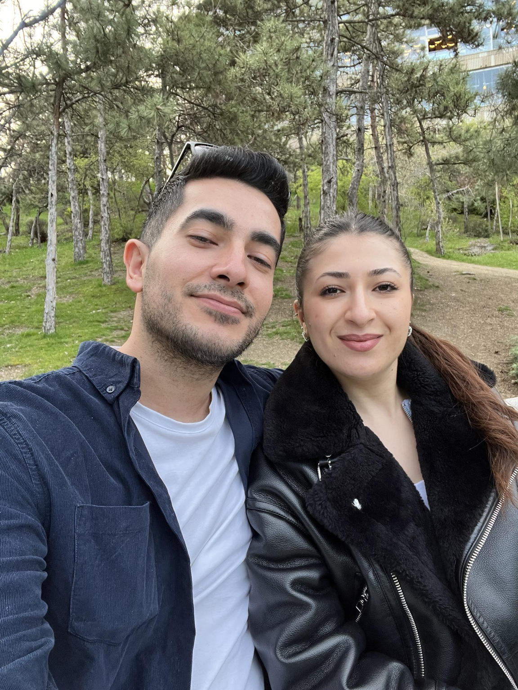

01
Her şey bir tweet'le başladı.
Bazen hayatımızdaki en güzel hikâyeler, hiç beklemediğimiz bir yerde başlar.
Bu sayfa, birlikte yaşadığımız güzel anların ve kalbimde sana ayırdığım yerin küçük bir hatırası.
Twitter'da başlayan, Konya'da filizlenen ve Ankara'da alevlenen bir hikâye. İyi ki yollarımız kesişmiş.

Bazen hayatımızdaki en güzel hikâyeler, hiç beklemediğimiz bir yerde başlar.

Bir şehir, iki insan ve yavaş yavaş büyüyen bir hikâye...

Ve bazı duygular vardır; mesafe değil, kalp belirler.

Yeni yerler keşfetmek, yan yana yürümek ve her yeri biraz daha güzel görmek.

Bazen en güzel plan, aynı masada oturup birlikte bir şeyler yemektir.

Küçük şeyler, doğru insanla yaşanınca kocaman hatıralara dönüşüyor.

Şefkatin, merhametin, zekân ve beni sevmen...

Seni sevmeyi seviyorum.

Yaşadığımız tartışmalar ikimizi de üzdü. Seni kırdığım her an için gerçekten üzgünüm.

Sakinleşip birbirimizi dinledik. İkimiz de kendimize düşen dersleri aldık.
“Seni sevmeyi seviyorum.”Serhat'tan Şirin'e
Yeni yerler, yemekler, dondurmalar, yolculuklar ve sadece yan yana olduğumuz anlar...
Seni ne kadar çok sevdiğimi bazen kelimelerle anlatmak gerçekten zor. Son zamanlarda yaşadığımız tartışmaların ikimizi de ne kadar yorduğunu ve üzdüğünü biliyorum. Seni kırdığım ve üzdüğüm her an için gerçekten çok üzgünüm.
Ama bugün sakinleşip birbirimizi daha iyi dinlediğimizde, birbirimizi daha iyi anlamayı başardığımızı düşünüyorum. İkimiz de yaşadıklarımızdan kendimize düşen dersleri çıkardık.
Ben tartışmaların değil, seninle güzel olan her şeyin hikâyemizde daha fazla yer kaplamasını istiyorum. Şefkatini, merhametini, zekânı ve beni sevmeni çok seviyorum. Ama en çok da seni sevmeyi seviyorum.
Seninle gezmeyi, yeni yerler keşfetmeyi, birlikte yemek yemeyi ve dondurma yemeyi seviyorum. Çünkü aslında mesele ne yaptığımızdan çok, bunları seninle yapıyor olmak.
Seni üzmek ya da kaybetme ihtimalini düşünmek istemiyorum. Bundan sonra birbirimizi daha çok dinleyelim, daha çok anlayalım ve zor anlarda bile birbirimizin yanında olduğumuzu unutmayalım.
Seni çok seviyorum, Güzelim. ♡
Umarım bir gün dönüp bugünlere baktığımızda, yaşadığımız zorlukları değil; onları aşıp birbirimizi daha iyi anlamayı seçtiğimiz anı hatırlarız.
13 · 07 · Sonsuza kadar